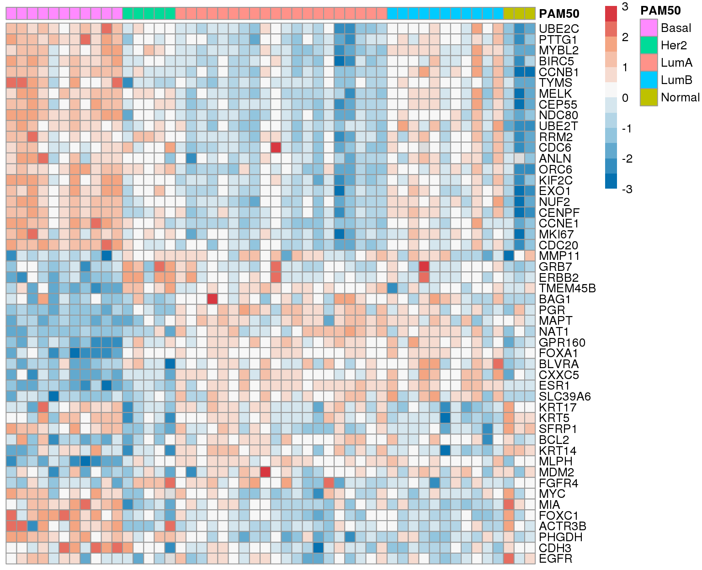
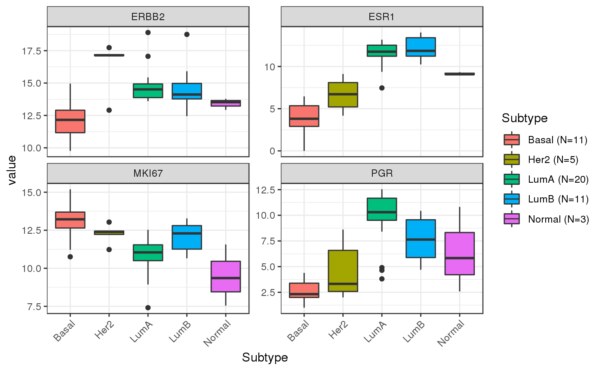

gPAM50_tutorial.Rmd# install.packages("devtools")
devtools::install_github("changc25/gPAM50",
host = "https://github.roche.com/api/v3")library(tidyverse)
library(gPAM50)
library(Biobase) ## for parsing ExpressionSet data
library(DT) ## this is optional. It helps render dataframe nicely in html
# library(edgeR) ## for normalizing RNAseq data (method: cpm). This is optionalSubset of TCGA-BRCA. The data (object name is es) is pre-loaded when gPAM50 is called.
es1 <- data.frame(assayData(es)$exprs)
#es1 = data.frame(cpm(es1)) ## raw count => CPM
es1 <- log2(es1+1) ## log2 transform
ph1 <- pData(es)
an1 <- fData(es)
cat(dim(es1)[1], "genes\n")
#> 20133 genes
cat(dim(es1)[2], "samples\n")
#> 50 samples
cat(dim(ph1)[2], "features\n")
#> 131 featuresHere are the first few records of the gene expression data. This is after a log2 transformation.
DT::datatable(es1[1:5, 1:10]) %>%
DT::formatRound(c(1:10), digits = 3)Gene information. Especially the EntrezID is important for telling gPAM50 package which gene is which. It is a unique ID for each gene. Some genes may have the same Symbol, but they will have different EntrezID. Make sure your dataset contains this information.
DT::datatable(an1[1:5, ])This dataframe is not necessary for making prediction. Phenotype data describes the patient metadata, including some basic clinical features like gender and cancer status.
DT::datatable(ph1[1:3, 1:10])gPAM50 takes two arguments:
expression dataframe; this is the dataframe shown above (section 2.1). Columns are different samples and rows are different genes. It is important to re-assign rownames of this dataframe to corresponding EntrezID. You can assign unique gene symbols to rownames as well, however, the symbol name may change depending on the RNA-seq platform, but the Entrez ID should be consistent.
cutoff; the default predicted subtype is simply the one with maximum probability, you can also specify a custom cutoff with the cutoff parameter. For example, if cutoff = 0.9, only the subtype with > 0.9 probability and is the max will be assigned to final PAM50 subtype call. If none of the subtypes produce probability > 0.9, the final PAM50 call will be NA.
## IMPORTANT! Assign Gene ID to the expression data (es1)
rownames(es1) <- an1$EntrezID
## get prediction
df.pred <- gPAM50(es1, cutoff = 0)
DT::datatable(head(df.pred)) %>%
DT::formatRound(c(2:6), digits = 3)It returns a dataframe with prediction result; the row order is the same as your input data. The PAM50 column shows the predicted subtype. The other columns, Basal, Her2, LumA, LumB, and Normal, indicate the probability of each subtype.
There two methods for us to quickly visualize whether our prediction makes sense:
plotPAM50 Look at the heatmap to see if predicted subgroups have similar gene patterns as Parker’s paper. In the heatmap, the order of those 50 genes are the same as Parker’s paper.plotPAM50(es1, df.pred$PAM50)
2.plotValidationGenes Look at 4 well-known genes (can add more genes you know that also have significant patterns for each subgroup):
ERBB2: Her2 gene; Her2 group should have the highest ERBB2 value.ESR1 : ER gene; LumA and LumB groups should have the highest ESR1 value.MKI67: tumor growth factor; LumA should have the lowest MKI67 value because LumA patients usually have the best prognosis.PGR : PR gene; LumA should have the highest PGR value.You can also visualize any other gene of interest by using the optional argument genes = c("EGFR", "FOXA1"). Note: this funciton currently only supports plotting 50 PAM50 genes.
plotValidationGenes(es1, df.pred$PAM50)
{kind=link}